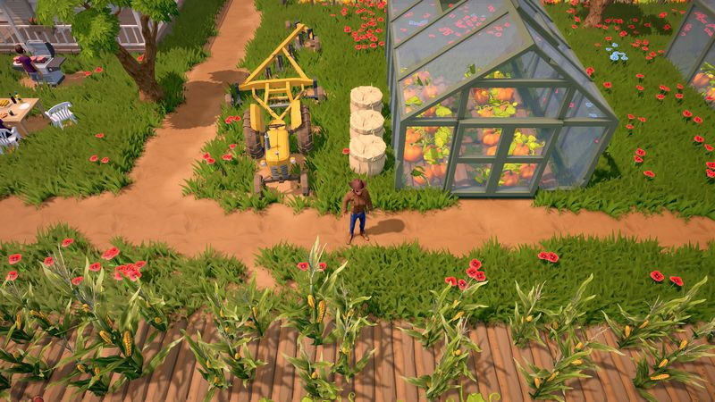

The Ranchers Crop Database

Pre-launch note: Based on the free demo and official dev updates — we'll update with confirmed numbers within hours of the July 31 Early Access launch. Entries below are demo data, pending launch confirmation and exist so you can search, sort, and compare from day one. Do not treat the numbers as final.
Search by name, filter by season, and click any column header to sort. Profit/day is (sell price − seed cost) ÷ growth days — the metric that actually decides what to plant. Learn why in the money-making guide.
– entries
| Crop | Season | Growth (days) | Seed cost | Sell price | Profit/day | Status |
|---|---|---|---|---|---|---|
| Potato | Spring | 6 | 20 g | 45 g | 4.17 g | demo data |
| Carrot | Spring | 4 | 12 g | 26 g | 3.50 g | demo data |
| Lettuce | Spring | 3 | 8 g | 18 g | 3.33 g | demo data |
| Tomato | Summer | 5 | 18 g | 42 g | 4.80 g | demo data |
| Corn | Summer | 8 | 30 g | 85 g | 6.88 g | demo data |
| Watermelon | Summer | 10 | 45 g | 120 g | 7.50 g | demo data |
| Pumpkin | Fall | 9 | 40 g | 110 g | 7.78 g | demo data |
| Cabbage | Fall | 6 | 22 g | 52 g | 5.00 g | demo data |
| Wheat | Winter | 7 | 15 g | 38 g | 3.29 g | demo data |
How we compute profit/day: (sell price − seed cost) ÷ growth days, per plot. Multi-harvest and regrowable crops will get their own columns once confirmed in Early Access. Want to compare your own in-game numbers right now? Use the profit calculator.
Reading the table
- Fast crops (short growth, modest price) win the first week — they compound quickly and keep cash flowing.
- Slow crops win on paper profit/day once you have enough plots running in parallel.
- Season is law. Sort by season at the start of each in-game month and plant only what's in window.
Pair this with the animal database to plan your whole ranch economy, and read the beginner's guide if this is your first season.